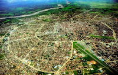

About Me
My name is Guadalupe. I was born in Bolivia and live with my family in Santa Cruz, I am studying at BYU Idaho
Santa Cruz, Bolivia
Santa Cruz de la Sierra is the largest city in Bolivia, known for its tropical climate, and vibrant culture.It is also known as the City of Rings
